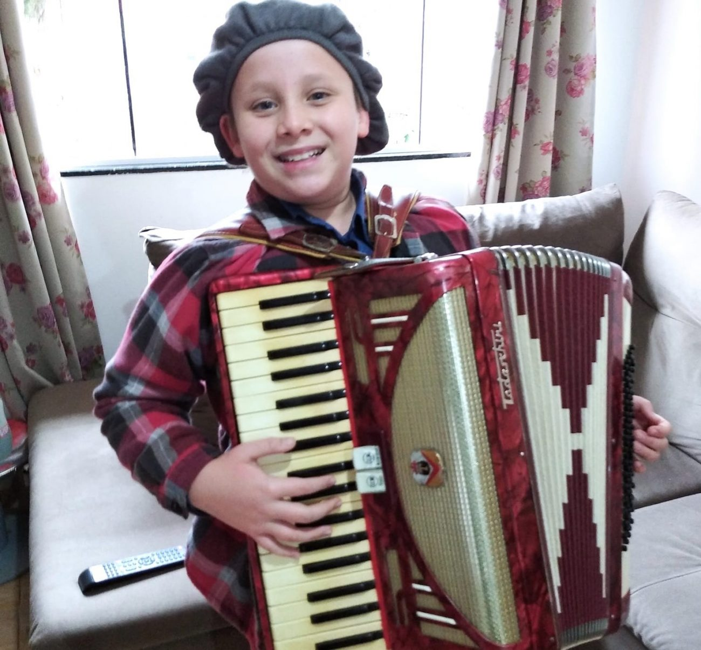
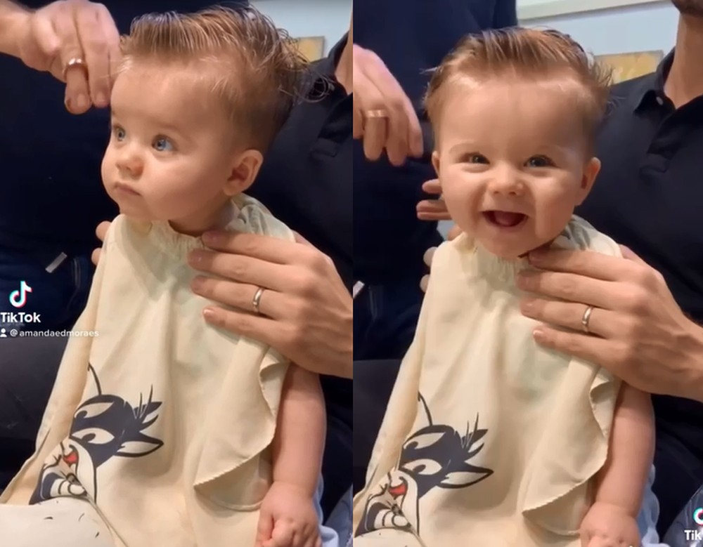

Menino distribui mangas após boa colheita em SC: ‘peguem à vontade’
Fonte: ND Mais
Enquanto ajudava a mãe a juntar as mangas no quintal de casa, Gustavo de Honorato Pelissari, de 12 anos,
teve uma excelente ideia. Ao ver que a quantidade de frutas era maior do que a família consumiria, decidiu compartilhar as mangas com quem
passava em frente a sua casa, localizada no Centro de São Miguel do Oeste, no Extremo-Oeste de Santa Catarina.
O menino conseguiu duas caixas de madeira no supermercado do bairro e colocou as mangas. Junto,
disponibilizou sacolinhas e em uma folha de papel, que se tornou uma placa, escreveu: “Peguem à vontade”. A intenção, segundo Gustavo, é
que as pessoas que passam pela rua levem as frutas para casa.
As duas mangueiras foram plantadas pelo avô do menino, há cerca de 30 anos. “Quando chega a época, as
mangueiras ficam carregadas e dão mais frutas do que a gente consegue comer. Percebi que poderíamos repartir com as outras pessoas”,
relata.
Gustavo conta que a notícia circulou a cidade e muitas pessoas começaram a ligar pedindo se ainda tinha
mangas. “Elas passam aqui e pegam e eu fico muito feliz. Desde pequeno meus pais me ensinaram a ser solidário e a repartir as coisas”.
Exemplo que vem de casa
Gustavo é filho único e tem nos pais, Paulo Cesar Pelissari e Rosemeri de Honorato Pelissari, o exemplo de
amor ao próximo. A mãe relata que o menino sempre teve esse jeito solidário.
“Quando a gente morava em Jaraguá do Sul eu trabalhava na casa de uma mulher que tinha uma fruteira e, as
vezes, ela nos dava algumas frutas. Eu levava para casa e dividia com os vizinhos, então desde criança ele pegou isso como exemplo”,
explica a mãe.
Para ela, a atitude do filho é motivo de orgulho e demonstra que a família tem conseguido passar a mensagem
sobre a importância da corrente do bem. “Sempre converso com ele sobre fazer o bem porque isso volta para nós. Deu resultado. Que sirva
de exemplo para que todos. A intenção é sempre dividir com o próximo”.

Veja Mais+
Vídeo de bebê sorrindo ao cortar cabelo pela 1ª vez viraliza e ganha mais de 35 milhões de visualizações

Levi viralizou na internet com sua sua primeira ida ao cabeleireiro. Com 200 mil seguidores no Tik Tok,
família não esperava tamanha repercussão.